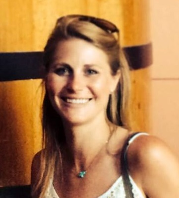

Profile
I am a fourth-year graduate student in the Cognitive Sciences program at Georgia State Univeristy. My research
is centered around the themes of cognitive development and social learning. Past and current projects investigate skills such as imitation, tool use,
facial motion processing, emotion recognition, and prospective memory in typically developing children. I also collaborate on research
projects that examine these abilities in children with autism spectrum disorder, nonhuman primates, and adults.
- Education
-
Ph.D. in PsychologyExpected May 2016
Georgia State University, Atlanta‚ GA
- Cognitive Sciences Program
- Advisor: Rebecca Williamson
M.A. in PsychologyMay 2014
Georgia State University, Atlanta, GA
- Cognitive Sciences Program
- Advisor: Rebecca Williamson
- Thesis: “Children’s Imitation of the Majority in a Goal-Directed Task: Examining Number of Demonstrators and Demonstration Modality”
B.S. in PsychologyMay 2011
Lehigh University , Bethlehem, PA
- Cognitive Psychology Concentration
- Senior Research Project: “Report a Study, Study a Report: Using Phrase and Word Pair Reversals to Study Speech Production”
- Fellowships and Honors
-
- Research Experience
-
Graduate Research AssistantAugust 2011 – Present
Learning and Development Lab, Georgia State University
Advisor: Rebecca Williamson
The Learning and Development Lab investigates how typically developing children learn from the people around them.
Graduate students are expected to design, implement, and publish research within the realms of cognitive and social development.
We also emphasize undergraduate mentorship.
Undergraduate Lab ManagerSpring 2011
Language Production Lab, Lehigh University
Advisor: Padraig O'Seaghdha
The Language Production Lab investigates speech production and planning in English-speaking adults.
Research topics include sentence production, syntactic priming and interference, and competition
between semantic and grammatical structures.
Undergraduate Research Assistant2009 – 2011
Language Production Lab, Lehigh University
Advisor: Padraig O'Seaghdha
- Teaching Experience
-
Graduate Teaching Assistant, Georgia State UniversitySpring 2015
Instructor of record for Intro to Human Development (PSYC 2103)
- Developed course materials, activities, and assessments for enrollment of 35 undergraduate students
- Taught lecture-style class for 2.5 hours per week
Graduate Learning Assistant, Georgia State UniversityAugust 2011 – May 2012
Instructor: Elizabeth Sheehan, Ph.D.
- Assisted students in face-to-face and online sections of Introduction to General Psychology (PSYC 1101)
- Graded written work, monitored online discussion boards, and proctored exams
- Relevant Work Experience
-
Resource Counselor, Daybreak Day Camp, Cambridge, MASummer 2011
Supervisor: Mia Klinger-Powell, Ed.M.
- Worked closely with Executive Director to coordinate daily activities and trips for 31 urban children with behavioral and emotional issues
- Modeled behavior management skills and provided supervision for group counselors
Residential Counselor, Wediko Children's Services, Windsor, NHSummer 2010
Supervisor: Katie Walsh, MSW
- Provided direct care for children with behavioral and developmental disabilities in a 6–week residential treatment program
- Strengthened leadership and interpersonal skills as kayaking and canoeing activities instructor
- Publications and Manuscripts in Prep
-
- Gonsiorowski, A., Williamson, R. A., & Robins, D. L. (submitted). Characterizing the imitation of object-directed acts in young children with autism spectrum disorder.
- Williamson, R. A. & Gonsiorowski, A. (under revision). Imitation. In Hopkins, B., Geangu, E., & Linkenauger, S. (Eds.).
The Cambridge Encyclopedia of Child Development (2nd Edition). Cambridge, UK: Cambridge University Press.
- Perdue, B. M., Evans, T. A., Williamson, R. A., Gonsiorowski, A., & Beran, M. J. (2014). Prospective memory in children and
chimpanzees. Animal Cognition, 17(2), 287-295.
- Conference Presentations
-
- Gonsiorowski, A. & Williamson, R. A. (Accepted for March, 2015). Child's perceptions of goal-directed acts: Manipulating the number of demonstrators in a goal-directed task. Poster to be presented at the Society for Research in Child Development Biennial Meeting, Philadelphia, PA.
- Prempeh, L., Gonsiorowski, A., & Williamson, R. A. (October, 2014). Do two-year-olds innovate following demonstrations using tools? Poster presented at the GSU Psychology Undergraduate Research Conference, Atlanta, GA.
- Gonsiorowski, A. & Williamson, R. (March, 2014). The effect of prior experience on majority-biased transmission. Poster presented at the 2014 Society for Research in Human Development Biennial Meeting, Austin, TX.
- Gonsiorowski, A., Williamson, R., & Robins, D. (October, 2013). Imitation of manner and outcome acts in toddlers with autism spectrum disorders. Poster presented at the Eighth Biennial Meeting of the Cognitive Development Society, Memphis, TN.
- Ray, S., Gonsiorowski, A., Robins, D., & Williamson, R. (October, 2013). Explicit social behavior in response to live displays. Poster presentated at the GSU Psychology Undergraduate Research Conference, Atlanta, GA.
- Gonsiorowski, A.Perdue, B., Beran, M., Evans, T., & Williamson, R. (April, 2013). Prospective memory and delay of gratification in 3-year-old children. Poster presented at the Society for Research in Child Development Biennial Meeting, Seattle, WA.
- Gonsiorowski, A., Robins, D., & Williamson, R. (March, 2013). Toddlers’ capacity for implicit social evaluations. Poster presented at the Southeastern Psychological Association 59th Annual Meeting, Atlanta, GA.
- Leonard, A., Reeck, V., Gonsiorowski, A., Robins, D. L., & Williamson, R. A. (March, 2013). Toddlers' social behaviors in response to helping/hindering displays. Poster presented at the 2013 Georgia State Undergraduate Research Conference, Atlanta, GA.
- Stover, R., Gonsiorowski, A., Robins, D. L., Williamson, R. (March, 2013). Motor skills and imitation in children with autism. Poster presented at the 2013 Georgia State Undergraduate Research Conference, Atlanta, GA.
- Garcia, S., Gonsiorowski, A., Robins, D., & Williamson, R. (October, 2012). Imitation of a multi-step sequence by children with autism. Poster presented at the GSU Psychology Undergraduate Research Conference, Atlanta, GA.
- Gonsiorowski, A. (April, 2011). Report a study, study a report: Using phrase and word pair reversals to study speech production. Talk presented at the LVAIC Undergraduate Psychology Conference, Easton, PA.
- Skills
-
ExcellentGo-to tools
★ ★ ★
- SPSS, Microsoft Office Suite
ProficientCompetent and comfortable
★ ★ ☆
- E-Prime, SAS, MATLAB, Adobe AfterEffects
BasicEssential foundation and basics
★ ☆ ☆